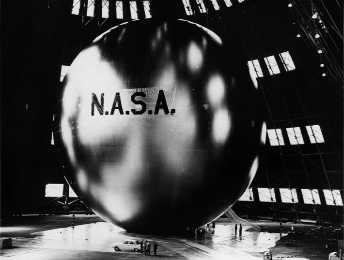

Last year, NASA lofted a massive balloon over Antarctica, carrying beneath it a 5,000-pound telescope. Known as GUSTO, it will help astronomers understand the story of star formation in the universe.
A lofted balloon might seem rather a low-tech approach to enable front-line cosmological discoveries in an era when rockets are now ripping into space with such regularity. But scientists have been working for nearly 250 years to perfect the art of scientific ballooning. From the first samples of the Earth’s high troposphere—gathered in a glass bottle—to new hints about the shape of the universe, balloons have played a surprisingly important role in our understanding of our own planet and the universe beyond. Here are 11 of the most fascinating balloon missions across history.
1783: In late 1700s France, the Montgolfier brothers sent the first passengers into the skies in a balloon: At the court of King Louis XVI at Versailles, they loaded a sheep, duck, and chicken into a round wicker basket tied to a hydrogen-filled balloon by a rope. As onlookers applauded in awe, the balloon lifted off the ground and soared into the air—only to descend into nearby woods 10 minutes later. (The animals survived the flight.)
Just two months later, human passengers boarded a basket attached to a spherical balloon, which toured the heavens for 25 minutes. A new era of science had commenced: Human aeronauts began using balloons to study the atmosphere.
During a crash landing, he and his assistant wore helmets fashioned from wicker chicken baskets.
1804: French chemist Joseph Louis Gay-Lussac flew a balloon up to 23,000 feet to study how gases react to different environments. He carried a thermometer, a barometer, and a hygrometer with him. High in the atmosphere, he filled an evacuated glass bottle—the air had been removed from inside to create a vacuum—with an air sample and found that it had the same chemical composition as air on the ground.
1898: French meteorologist Léon Teisserenc de Bort wanted to know how air temperatures vary at different elevations from the Earth, so he loaded an unpiloted balloon made of paper and silk with temperature-reading devices and dispatched it into the atmosphere. He found that temperatures dropped as the balloon rose, but above 26,000 feet, the temperature held steady. In 1902, he proposed a name for this upper layer of the atmosphere: the stratosphere. (We now know that temperature changes are inverted in the stratosphere and actually increase with height to a certain altitude.)
1912: In a single year, Austrian physicistVictor F. Hess made seven different voyages in a hydrogen balloon. On his seventh, he ascended above the Bohemian town of Aussig to more than 15,000 feet, where he was surprised to find that, according to his carefully calibrated electroscope, ionization of the atmosphere did not fall as he rose. Instead, it was nearly three times higher up there than it was on the ground. These observations led to the discovery of cosmic rays, for which he received a Nobel Prize in 1936.

IT'S A BIRD!: This communication satellite-balloon combo, nicknamed a satelloon, first launched in 1960. Here, it's seen fully inflated, with workers nearby for scale. The satelloon was so large it could be seen with the naked eye from the ground as it passed 120,000 feet overhead. Photo by NASA / Goddard Space Flight Center.
1931: Swiss physicistAuguste Piccard wanted to make his own observations of cosmic radiation in the atmosphere via hydrogen balloon. To protect himself and his assistant, though, Piccard designed a spherical airtight pressurized aluminum cabin. During a crash landing into the Bavarian Alps, he and his assistant wore helmets fashioned from wicker chicken baskets and pillows on their heads. He would go on to create special hatch doors to improve safety on crewed flights. He later predicted that a closed-capsule system would one day take humans to the moon.
1947: After World War II, the era of plastic balloons, known as “skyhooks,” took off. The United States Navy funded an aeronautical research laboratory at the University of Minnesota where scientists designed open-necked balloons made of thin plastic film, dubbed Mylar or Stratofilm. The new material enabled the construction of larger, lighter balloons that could carry more weight to higher elevations and that could maintain a constant altitude. The first balloon in this project was successfully flown on Sept. 25, 1947. Skyhooks represented the beginnings of space exploration, and later even served as platforms for launching rockets from the stratosphere.
1957: In the 1950s,scientists began sending telescopes up in balloons. One such telescope was named the Stratoscope I, a 12-inch reflecting telescope operated by remote control and suspended from a polyethylene balloon. The Stratoscope I flew seven times between 1957 and 1959 with the aim of capturing high resolution imaging of solar activity. It was followed by Stratoscope II in the early ’60s, which shares some similarities with early prototypes for today’s Hubble Space Telescope.
1960:Deep in the Space Race, NASA launched an ambitious project: a satelloon—half satellite, half balloon. It took seven tries before the balloon successfully launched. The Echo 1 was a communications satelloon: a large sphere of thin mylar that inflated in space, it provided a reflective surface against which radio signals from one location on Earth could bounce to another location. It deorbited in 1968, but helped usher in a new era of satellite-based communications signals.
Balloon observations by Victor F. Hess led to the discovery of cosmic rays, for which he won a Nobel prize in 1936.
1962:A Navy astronomer and an Air Force captain climbed into a small steel capsule attached to a 300-foot-tall mylar balloon, aiming to study the cosmos with a special stabilizing telescope and other custom instruments. Over the course of 18 and a half hours, they rose to 82,000 feet and returned to Earth as part of a mission known as Operation Stargazer. Even though the flight was a great success, it would also be the last of piloted balloon flights for scientific research. The project was considered too expensive and canceled in 1963.
1998: The BOOMERanG experiment—Balloon Observations Of Millimetric Extragalactic Radiation and Geophysics—flew a telescope on a balloon 22 miles above Antarctica. Its goal? To measure cosmic microwave background radiation, an afterglow of the Big Bang that permeates the universe. At such a high altitude, the atmospheric absorption of microwaves falls to a minimum, giving scientists a clearer picture of structures that predate the first star or galaxy in the universe. The results showed the geometry of the universe to be flat—which has since been confirmed by other measurements.
2024: A helium balloon mission launched just last year to study the atmospheres around exoplanets, especially “hot Jupiters”—gas giants that orbit quickly and closely around their stars. The mission, called EXCITE, is flying at about 132,000 feet, and collects infrared light, which it runs through a spectrometer to detect any minute changes in light from the exoplanets. This sort of data could help scientists build three-dimensional models of the atmospheres of these gas giants, illuminating their temperature, composition, and weather dynamics—all from the upper atmosphere of our own planet. 
This article was inspired by a Nautilusfeature by Adam Mann about a boom in balloon-based astronomy.
Lead image: NASA